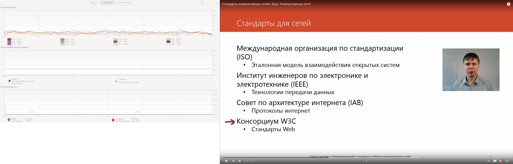
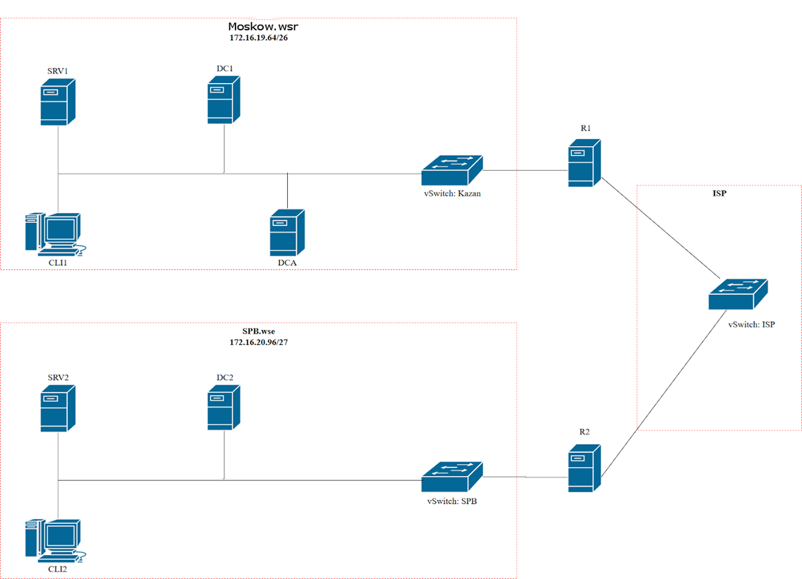

Домашнее задание №1. (выполнить то, что выделено зеленым цветом)
Внимательно прочтите задание от начала до конца – оно представляет собой целостную систему. При первом доступе к операционным системам либо следуйте указаниям мастера, либо используйте следующие реквизиты: Administrator/P@ssw0rd.
Если предоставленные виртуальные машины начнут самопроизвольно отключаться в процессе работы, попробуйте выполнить на них команду slmgr /rearm
Настройка DC1
Базовая настройка
переименуйте компьютер в DC1;
В консоли выполняем sconfig
Выбираем п.2, указываем имя DC1, перезагрузимся позже
в качестве адреса DC1 используйте первый возможный адрес из подсети 172.16.19.64/26;
Первый возможный адрес по маске 26 — 172.16.19.65
Выбираем п.8, сетевой адаптер 1, указываем статический IP адрес 172.16.19.65, маску 255.255.255.192, в качестве шлюза последний адрес подсети 172.16.19.126.
Выходим из приложения, перезапускаем машину.
Результат: имя установлено, IP адрес присвоен

Настройка SRV1
IP 172.16.19.66/26
IP 172.16.19.67/26;
CLI1 и CLI2 переименовали соответственно
Настройки — View your computer name — кнопка Rename this PC
Reboot
Настройка DC2
Базовая настройка
переименуйте компьютер в DC2;
По аналогии с остальными машинами
в качестве адреса DC2 используйте первый возможный адрес из подсети 172.16.20.96/27;
Первый адрес 172.16.20.97, маска 255.255.255.224, последний возможный адрес подсети 172.16.20.96/27 в качестве шлюза - 172.16.20.126
Настройка SRV2
Статический 172.16.20.98/27
Настройка R2
Базовая настройка
переименуйте компьютер в R2;
задайте настройки сети следующим образом: для сетевого интерфейса, подключенного к коммутатору ISP, используйте адрес 200.100.100.1/30; для сетевого адреса в подсети SPB.wse используйте последний возможный адрес из используемого адресного пространства;
В качестве сетевого интерфейса, подключенного к коммутатору ISP выбираем адаптер #2 и статический IP адрес 200.100.100.1/30, маска 255.255.255.252, шлюз 200.100.100.2/30
В качестве сетевого интерфейса, подключенного к сети 172.16.20.96/27 выбираем другой адаптер и статический IP адрес 172.16.20.126, маска 255.255.255.224, шлюз не указывается
Настройка R1
Базовая настройка
переименуйте компьютер в R1;
задайте настройки сети следующим образом: для сетевого интерфейса, подключенного к подключенного к коммутатору ISP, используйте адрес 200.100.100.2/30; для сетевого адреса в подсети Moskow.wsr используйте последний возможный адрес из используемого адресного пространства;
В качестве сетевого интерфейса, подключенного к коммутатору ISP выбираем адаптер #2 и статический IP адрес 200.100.100.2/30, маска 255.255.255.252, шлюз 200.100.100.1/30
В качестве сетевого интерфейса, подключенного к сети 172.16.19.64/26 выбираем другой адаптер и статический IP адрес 172.16.19.126, маска 255.255.255.192, шлюз не указывается
ДИАГРАММА ВИРТУАЛЬНОЙ СЕТИ
